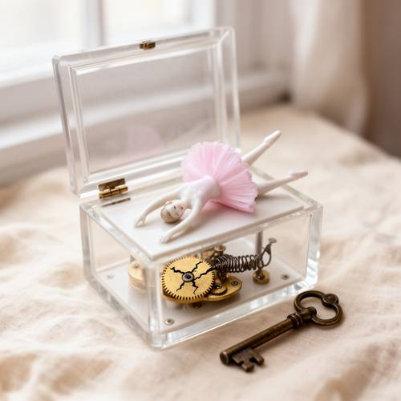
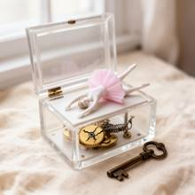
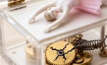

Relationship — A beautiful glass music box was opened, but because the clockwork had
A beautiful glass music box was opened, but because the clockwork had broken, the ballet dancer inside also fell sideways.


Judge — Direct
- PASSRelationship - Inclusion — The image displays a clear glass music box with its lid propped open. Positioned within the confines of the box, on top of the golden-colored clockwork mechanism, is a small figurine of a ballet dancer.
- FAILLogical Reasoning — The prompt requires the ballet dancer to have fallen sideways due to a broken clockwork. In the image, the ballet dancer figurine is standing upright in a classic ballet pose. It has not fallen sideways.
Judge — Continuum
- PASSRelationship - Inclusion — The image shows a transparent music box with its lid open. A figurine of a ballet dancer is positioned on a platform that is part of the music box's internal structure, thus placing the dancer inside the music box.
- PASSLogical Reasoning — The image depicts the internal clockwork mechanism of the music box, where a prominent gear is shown with black cracks on its surface, indicating it is broken. On the top platform, the ballet dancer figurine is not standing but is lying on its back, which visually represents the state of having 'fallen sideways' as a result of the broken mechanism.
What the agent did
Thinking
Let me carefully parse this prompt. "A beautiful glass music box is open, but because the spring mechanism is broken, the ballerina inside has fallen to the side." So this scene: a beautiful glass music box (open lid), a ballerina figurine inside, but because the clockwork mechanism is broken, she is lying on her side instead of spinning/standing. This is an evocative, melancholic scene. I should generate an image like the following: - A glass music box (a transparent glass dome or a glass box with the lid open) - An open lid (visible as a hinged lid propped open) - A ballerina figurine (white/pink dress, ballet slipper, delicate porcelain) - She is lying on her side / fallen — not upright, not dancing - The broken clockwork mechanism — perhaps visible gears, a cracked or stopped gear mechanism, a detached gear, a key, or exposed broken springs - A beautiful, somewhat melancholic atmosphere — soft light, pastel tones, a sense of stillness Visual details: the music box could be a glass-topped box with the lid opened to one side, a small stage inside with a ballerina lying on her side, the mechanism below exposed, showing a cracked gear or a broken spring, perhaps a winding key. A small tear-drop-like reflection of light. Soft focus, shallow depth of field. Let me write the generation prompt: "A beautiful transparent glass music box with its lid open, placed on a soft surface, inside is a delicate white porcelain ballerina figurine who has fallen on her side instead of standing and dancing, her tutu skirt spread out, beside her is a small broken clockwork mechanism — a cracked brass gear and a twisted spring, a winding key, soft warm ambient light, gentle pastel color palette, shallow depth of field, dreamlike, melancholic still-life, highly detailed, elegant." Generate at 1024x1024 (default). Then inspect, then edit if necessary. Key requirements from the prompt: 1. Glass music box ✓ 2. Open (lid open) ✓ 3. Broken clockwork mechanism — should be visible and clearly broken (cracked gear, detached spring, broken teeth) 4. Ballerina fallen on her side (clearly not standing) 5. Beautiful ✓ First, generate, then inspect the details. In particular, verify the dancer's pose and the broken mechanism. Mark the best result as I go.
Step 1 — `generate_image`
{
"model": "flux2-dev",
"prompt": "A beautiful transparent glass music box with its hinged lid propped open, resting on a soft cream linen surface. Inside the glass box, a delicate white porcelain ballet dancer figurine has fallen sideways on the small stage, lying on her side with her pink tutu splayed and one arm extended, as if she collapsed mid-dance. Beneath her, the exposed clockwork mechanism is clearly broken: a cracked brass gear with a broken tooth, a snapped coiled spring, and a tarnished winding key resting against the base. Soft diffused window light, gentle pastel palette, shallow depth of field, dreamy melancholic still-life, intricate details, elegant and still."
}Result img_0

Thinking
This result is excellent. Let me check the details: 1. Glass music box ✓ — transparent acrylic/glass box 2. Open lid ✓ — lid is propped open 3. Ballerina has fallen sideways ✓ — lying on her side, pink tutu, one leg extended, arms outspread 4. Broken clockwork ✓ — a cracked brass gear with visible cracks, a coiled spring (looks like a spring), and a winding key placed beside the box This matches the prompt well. Let me inspect the close-up of the dancer and gear to confirm the details are rendered correctly (face, hands, the crack on the gear).
Model
This is a very promising first result. Let me inspect the details of the dancer and the broken mechanism before deciding.
Step 2 — `inspect_region`
{
"image": "img_0",
"roi": [
300,
300,
780,
620
]
}Result img_1
Step 3 — `inspect_region`
{
"image": "img_0",
"roi": [
220,
480,
680,
760
]
}Result img_2

Thinking
Both close-ups back up the quality: 1. Dancer: porcelain ballerina in a pink tutu, lying on her side, arms outstretched, one leg extended upward. She has fallen over, not standing. Face is delicate, with closed eyes and red lips — looks like a figurine that has fallen. 2. Mechanism: a cracked brass gear with a prominent crack running through it, coiled spring, winding key. Clearly looks broken. The glass box, open lid, and the overall beautiful soft pastel aesthetic all fit the prompt. This is a strong result. Everything the prompt asked for is present and correct: - Beautiful glass music box ✓ - Open ✓ - Broken clockwork (cracked gear, key) ✓ - Dancer fallen on her side ✓ I should mark this as the best. The image is good enough to submit — there's no obvious flaw that needs fixing. Mark img_0 as the best and stop.
Model
Both crops have confirmed that the key elements are rendered correctly: the porcelain ballerina is clearly lying on her side, arms outstretched and tutu spread, and the clockwork shows a visibly cracked brass gear, a coiled spring, and a winding key — the "broken mechanism" reads instantly. The glass box with its open lid, soft pastel lighting, and melancholic stillness all fit the prompt.
Step 4 — `mark_best`
{
"image": "img_0",
"reason": "All requested elements verified: open glass music box, dancer figurine fallen sideways, clearly broken clockwork (cracked gear, spring, winding key), beautiful soft aesthetic."
}Thinking
I've marked the best result and it matches the description perfectly. I can stop here — a good enough result has been achieved, and editing is not needed.
Model
The image is complete and marked. The final result shows: - **An open glass music box** — a transparent box with its hinged lid propped open, sitting on soft cream linen near a window - **The fallen ballet dancer** — a delicate porcelain figurine in a pink tutu lying sideways on the stage, arms outstretched and one leg extended, as if she collapsed mid-performance - **The broken clockwork** — an exposed brass gear with a dramatic crack running through it, a coiled spring, and a tarnished winding key resting beside the box, telling the story of why the music (and the dance) stopped The soft pastel palette, shallow depth of field, and still, melancholic atmosphere give it the beautiful, wistful mood the prompt calls for. No further edits needed — this version is submitted as the best.